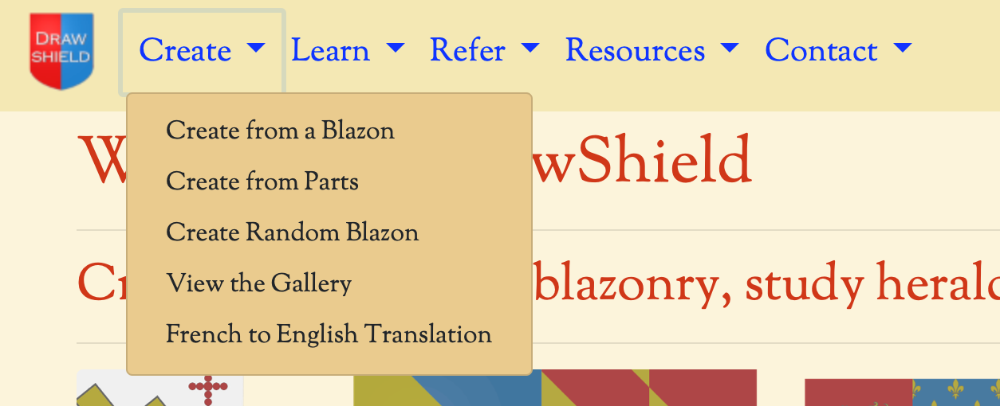
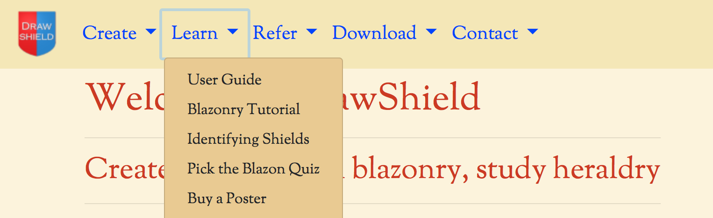
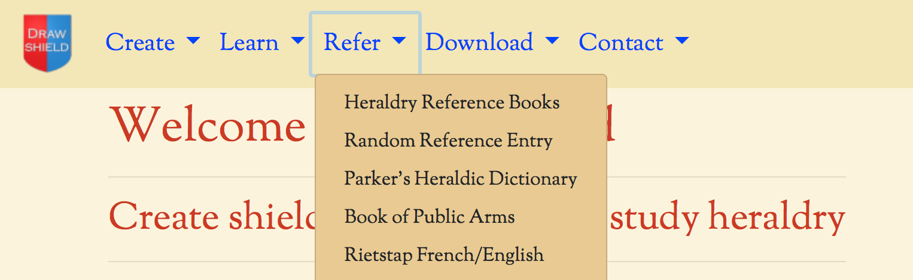
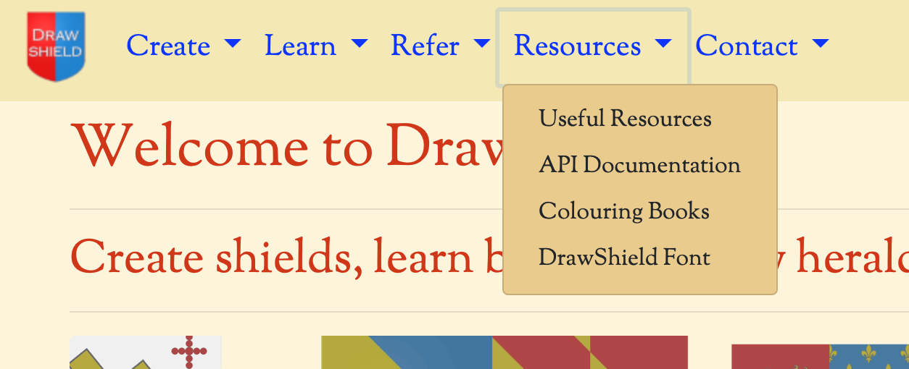
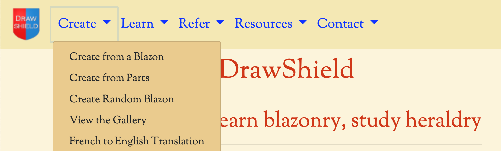

The DrawShield website provides you with tools and information to learn Blazonry, the language of heraldry, and to learn your own shield images. The main way to navigate around the site is to use the menu at the top of every screen. To return to the front page click on the shield icon on the top left side of every page. The main sections can be located using the drop-down menus shown below:
Under the "Create" menu are the various ways to create heraldic images, by entering blazons, selecting parts by choosing from a menu, getting some inspiration from a randomly generated blazon or admiring the extensive gallery of shield designs created and submitted by a talented group of drawshield users.
The "learn" menu is where you will find links to this user guide, a tutorial, a quiz to test your skills and other general background information on heraldry.
Under the "refer" menu you will find links to an increasing range of Herald reference works, reformatted and reorganised as easy to search webpages.
The "download" menu provides access to a small number of downloadable resources.
Finally, the "contact" menu allows you to get in touch with the website author, see a summary of recent tweets, changes to the website and programmes and for some longer postings in the blog.
Down the right-hand side of the page (or below the main screen on a mobile device) you will find various small information cards offering ways to support further development of the website, useful resources and another type of self-test quiz.